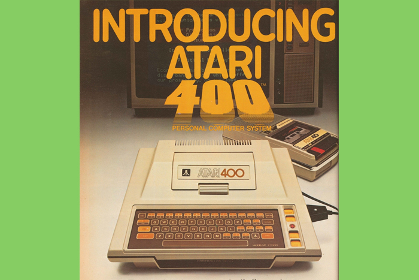

12.19.2017
Whoa! David, you type fast!”
One of my former professors made such a comment on the speed with which I entered in a twitter update during a Social Media training class that I now teach for our faculty and staff.
Having a former professor make such a comment is a story in of itself, but I thought I would share this story.
I decided it was a good time to give a bit of a break by reminiscing on how I developed speedy typing skills. Yes, I did take one of the last remaining typewriting classes at my high school on an IBM Selectric typewriter, also known as the IBM Golfball typewriter.
However, my story actually dates back to the first computer my Dad bought for me when I was in the sixth grade. The machine was an Atari 400, an 8-bit home computer designed primarily as a computer for children. The Atari 400 had an “advanced child-proof design featuring pressure-sensitive, wipe-clean keyboard”. It has a single cartridge port under the front cover. It was on this machine that I first began learning about computer programming. I can’t honestly say that I was learning how to program just what programming was.
I was subscribed to a children’s magazine called “3-2-1 Contact” and in the back of every issue were a couple of programs in BASIC (as in the BASIC programming language). I can still vividly remember one of the most exciting and exhilarating moments of my childhood, perhaps of my whole life. The moment came after seemingly endless hours of trying to get the very first program to run. I knew nothing about how I was supposed to type it in, whether punctuation or case had anything to do with the code, whether the line number needed to be typed and I definitely had no idea what the code meant. Yet, I tried and I tried and I tried until finally, after pressing the “Enter” key at the “RUN PROGRAM”, something happened. Something beautiful. Something amazing. Something that made me jump up and down, hoot and holler, clap and do a little jig.
Okay, specifically what happened was so basic and ordinary that no one but I would be impressed. It was the fact that it ran that made me so happy. The program just drew a multicolored box around the edge of the screen and then criss-crossed a multicolored “x” on the screen. It repeatedly drew the box and the x over and over again. It was essentially the most boring screensaver you could imagine. But, the code I entered ran. Brilliant! Genius! I still feel the excitement in my gut when I think about that moment.
A little later when I had begun to master the art of typing in the code on those last few pages of the children’s magazine and I actually started understanding what a majority of the BASIC code meant. I stumbled across a set of programs that would use the speaker in the PC to play music. The code itself was relatively short but there were tons and tons of data lines at the end of the code. The data codes were just lists of numbers separated by comma values. The numbers were pitches and lengths. Correctly coded and executed, a song would emerge from my speaker, complete with harmonies but still sounding like a robot out of movies from the 1970s. There were hundreds if not thousands of numbers in these lists to get a song to play. The first song I ever had play was the “Grand Old Flag”. Debugging the data lines was a pain in the rear because you’d hear a pitch that was wrong or note length wasn’t right and you’d have to hunt for the mistyped value.
It was the hours I spent typing in code that gave me my own prowess in typing. You just never know what skills you’ll pick up just by pursuing your passions. For me, I knew from those early days of coding that programming had to play a role in what I would do for a living. I still get that feeling of hooting and hollering when I find that bug in the code that I’ve written. To this day, that excitement is still there when I solve the problem after hours of eye-straining scrutiny.
I guess the moral of the story, is that you never know what skills will benefit you later on in your career. Also, it should remind you to find your passion. Something stirs your interest and excites you. If you’re a nerd like me, it may be debugging code. If you’re normal, it might just be solving problems or helping people. Don’t overlook those moments that get you hooting and hollering in life.